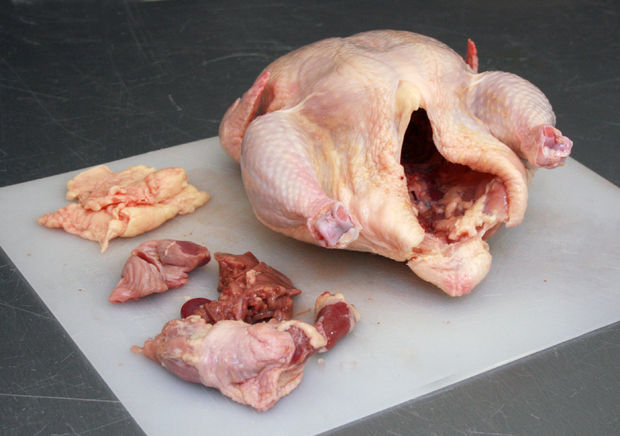
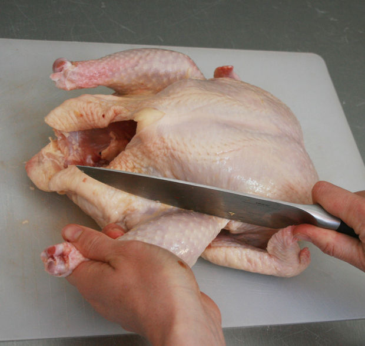
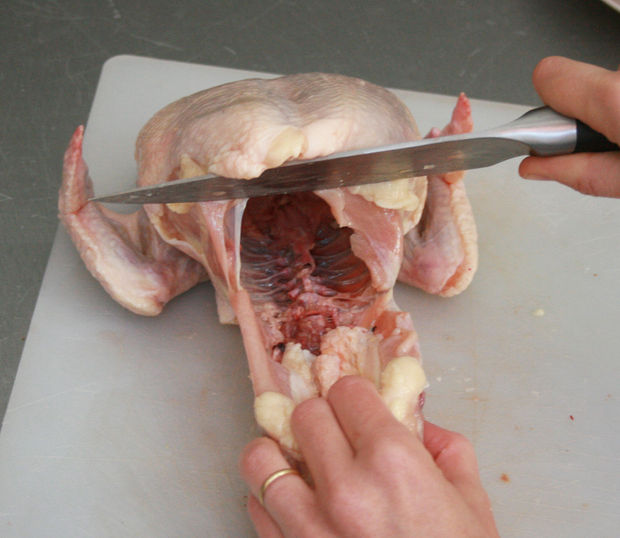
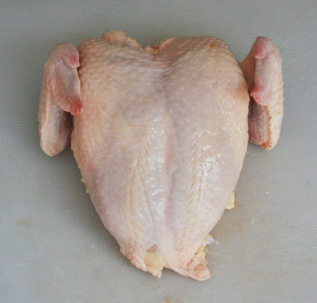
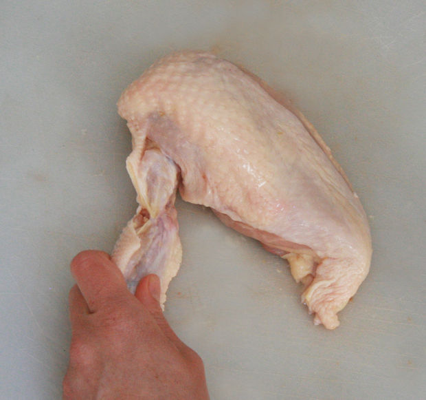

- Chicken
- Cutting Board
- Sharp Knife
- Hands
|
- Remove Excess:
- Remove the innards and any extra fat around the opening of the bird.
- Remove Thighs and Legs:
- Using the sharp knife, slice the skin between the drumstick and body.
- Find the joint and pop it out of the socket with your hands.
- Finish the cut to remove the leg from the body.
- Cut through the joint between the thigh and the leg, You can also use your hands to pop this joint out of its socket first.
- Repeat on other side
- Remove the Spine:
- Slice down each side of the ribs with a sharp knife.
- Continue to cut to remove entirety of spine.
- Separate Breasts:
- Place knife on the breastbone and apply pressure to cut the breast into two halves.
- Remove and Separate Wings:
- Find the joints, remove the wing and wing tip from the breast.
- Cut each breast in half crosswise to create evenly-sized pieces.
- Repeat with other breast
|
Step 1
Step 2
Step 3
Step 4
Step 5
|